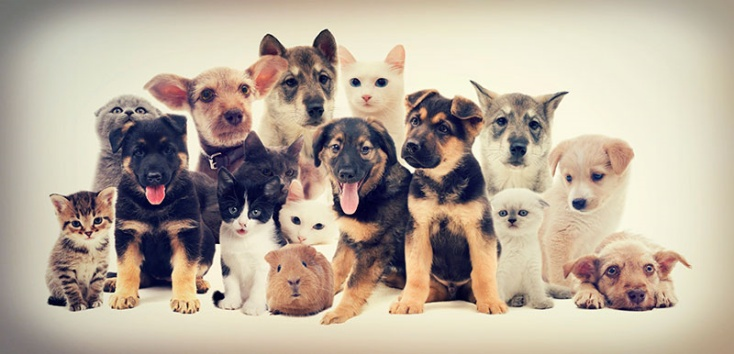

ENCUENTRA TU MASCOTA IDEAL
Nos entusiasma saber que estas pensando en adoptar, son muchos los animales que necesitan tu ayuda. Mascotas abandonadas, heridas o maltratadas están a la espera de una casa de acogida que les quiera. Si te comprometes a ser un buen dueño y estás decidido a adoptar puedes iniciar proceso con nosotros, nuestros pequeños amigos son entregados en óptimas condiciones de salud y belleza a adoptantes responsables y amorosos. En esta página conocerás nuestro proceso y requisitos, lo primero es conocer al que deseas adoptar, encuentralos más adelante.
